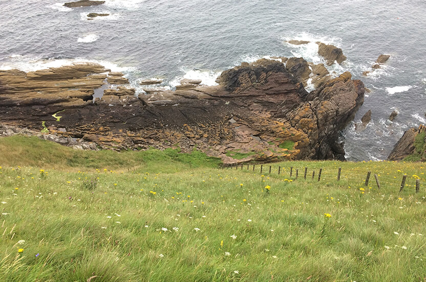
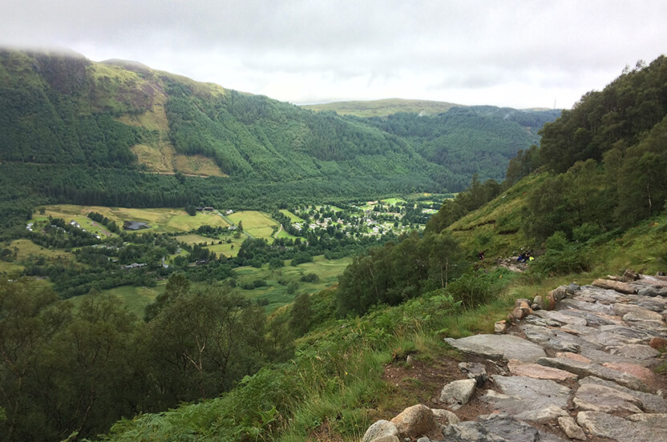
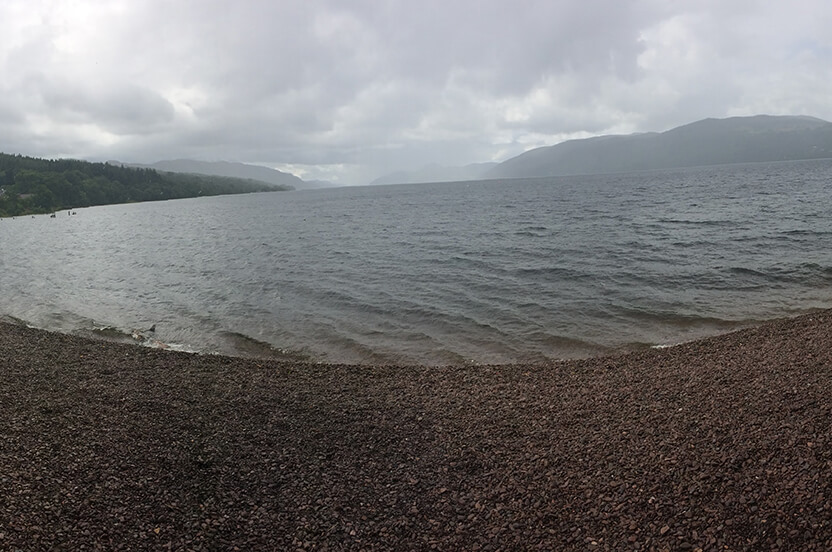

In de zomer van 2017 ben ik samen met mijn vriendin naar Schotland geweest. En ik zeg bewust Schotland, omdat we niet langer dan een paar dagen op de zelfde plaats zijn gebleven. We hebben door Schotland heen getrokken in ongeveer drie weken. En zelfs na drie weken hebben we nog steeds niet alles gezien. We komen zeker een keer terug. De fotogalerij begint met een foto waarop te zien is welk waar we allemaal zijn geweest gevolgd door onze hoogte punten van onze vakantie.
Het geologische Siccar Point

De stijle afdaling naar de zee
Op de dag dat we aankwamen met de boot zijn we langs het geologische bezienswaardigheid Siccar Point gekomen. Mijn vriendin die hier veel interesse heeft, moest en zou hier dan ook heen gaan. Ze had alleen de stijle afdaling niet verwacht, maar met een beetje motivatie zijn we beneden gekomen (en later ook weer omhoog) en hebben we de rotsformaties die het Siccar Point zo bijzonder maken kunnen bewonderen.
Onderweg naar de top van de Ben Nevis

Het uitzicht op de camping onderweg naar de top van de Ben Nevis
We zijn nergens in Schotland meer dan een paar dagen gebleven, zo ook niet in Fort William, waar de camping is die dichtbij de Ben Nevis was. Hierdoor had ik één specifieke dag dat ik de berg kon gaan beklimmen, maar helaas was er veel regen afgegeven. Echt Schots weer. Door kou, wind en regen ben ik de berg opgelopen, pauze zat er niet in want dan koelde je teveel af. Bovenaan aangekomen was het dan ook niet erg mooi, ik stond in een wolk en zag dus niks, daarbij was ik doorweekt en had ik het koud, de hagel sloeg tegen me gezicht en na ongeveer 10 minuten op de top rondgelopen te hebben besloot ik maar weer snel af te dalen. Maar achteraf ben ik toch erg blij dat ik het wel gedaan heb.
Een duik in het meer van Loch Ness

Het meer Loch Ness
Voordat we naar Schotland gingen hebben we eerst een aantal dingen opgeschreven die we echt wouden gaan doen in Schotland. Één daarvan was dat ik een duik wou gaan nemen in het meer van Loch Ness. Gewoon simpel weg om het van me bucket list af te kunnen strepen. Het was echter koud en meer dan erin rennen en vervolgens er weer heel snel uit is het niet geworden. Maar een duik is een duik!